Created with Adobe Dreamweaver CS4 (2002), hosted on Github Pages. This website is best viewed on Internet Explorer 8 or equivalent, with a 64KB/S or greater modem, and Jetbrains Mono, because it's the best font ever!
Home | Omni-Index | Physics / Practical Endorsement
A hazard is anything with the potential to cause harm
Common hazard categories include:
| Hazard | Symbol | Risk | Precaution |
|---|---|---|---|
| Flammable | 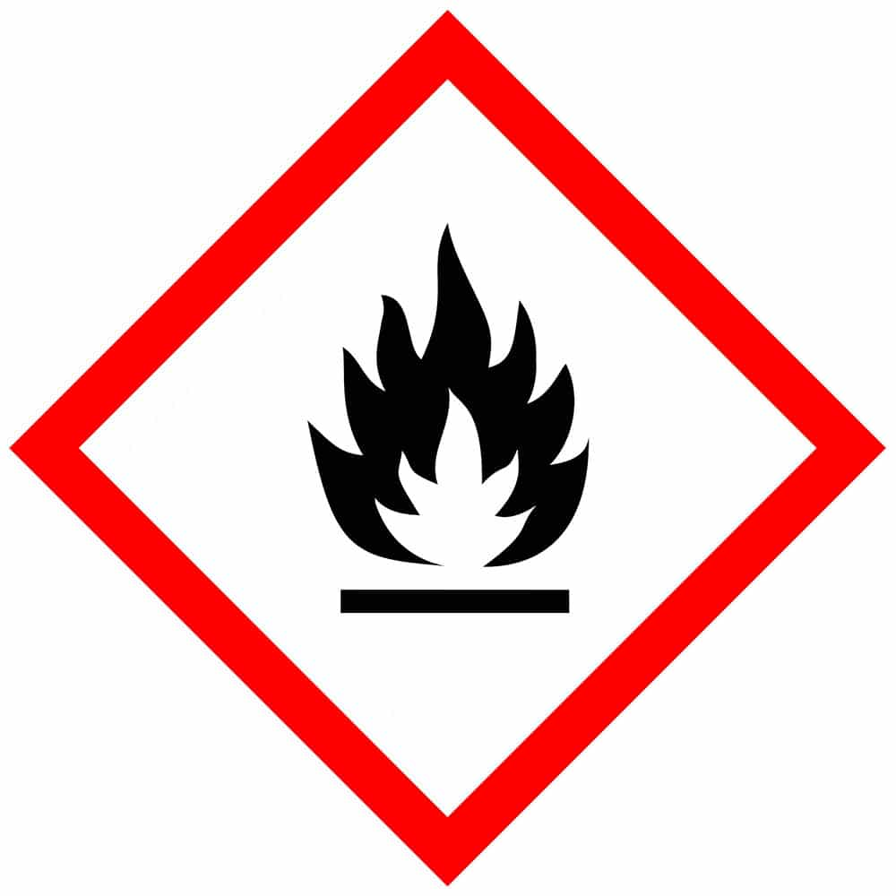 |
Could catch fire | Keep away from sources of ignition |
| Explosive | 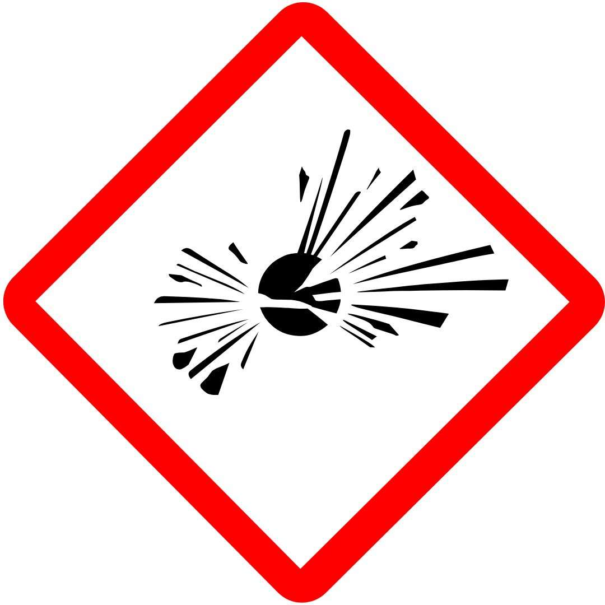 |
Could ignite and detonate | Reduce quantity to a minimum |
| Oxidising | 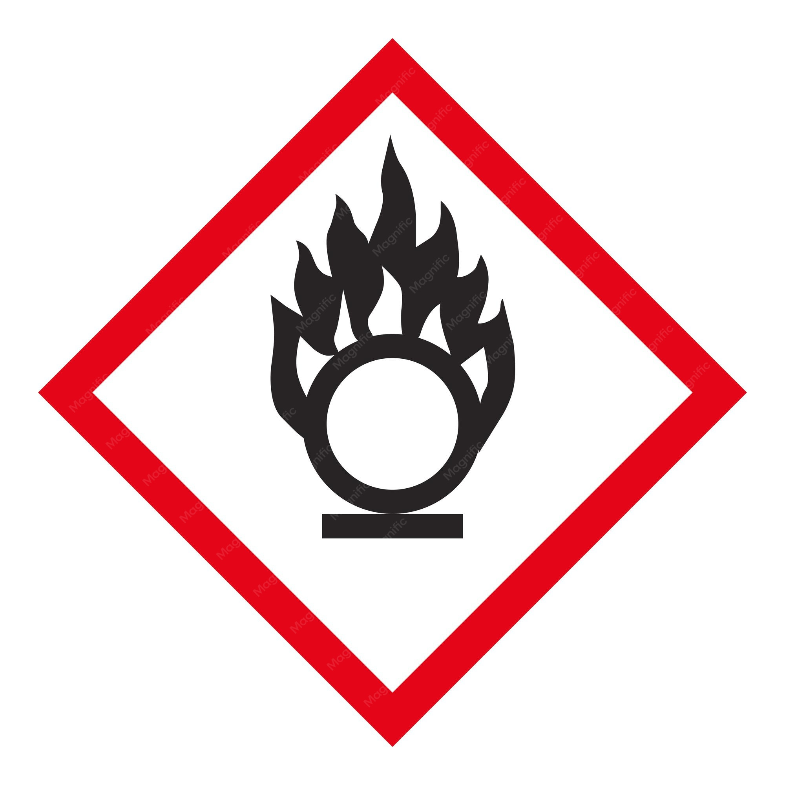 |
Produces heat through reactions | Avoid contact with combustible materials |
| Gases Under Pressure | 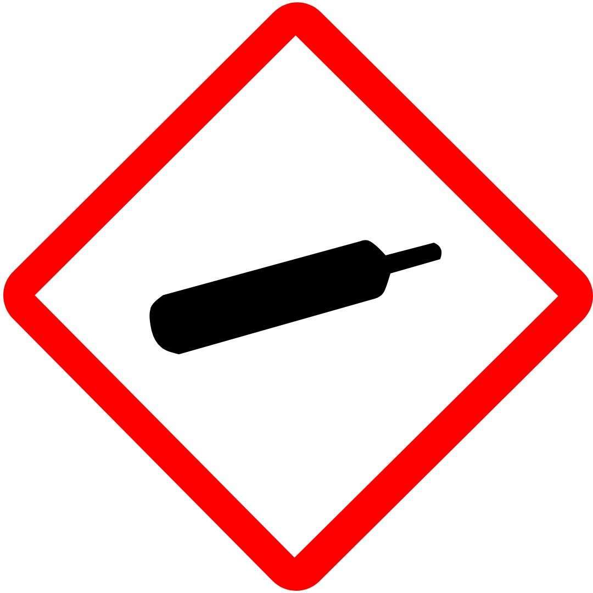 |
May explode when heated | Store and refrigerate |
| Corrosive | 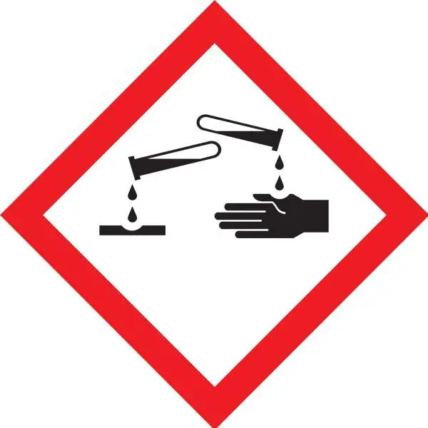 |
Can cause chemical burns | Use PPE to avoid contact, and good ventilation |
| Toxic | 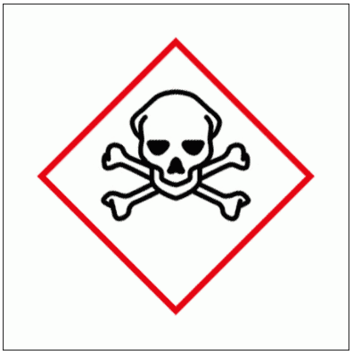 |
Serious health risk if inhaled/swallowed/penetrates skin | Fume cupboard |
| Serious Health Hazard | 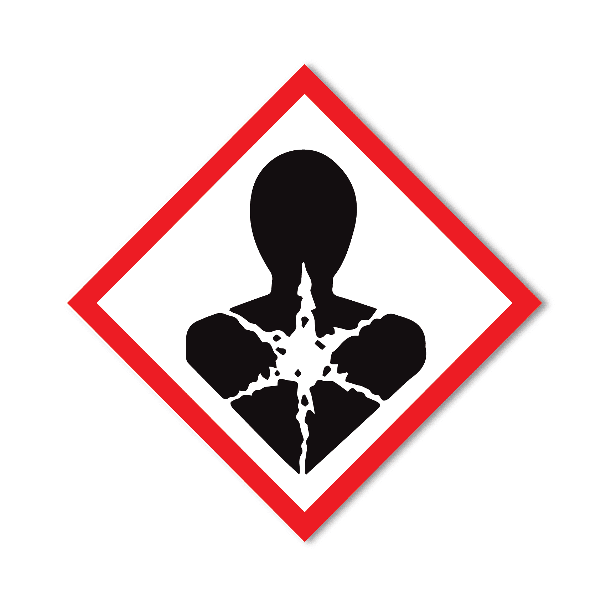 |
Possible carcinogen/longer term respiratory damage | Wear appropriate PPE |
| Harmful and/or Irritant | 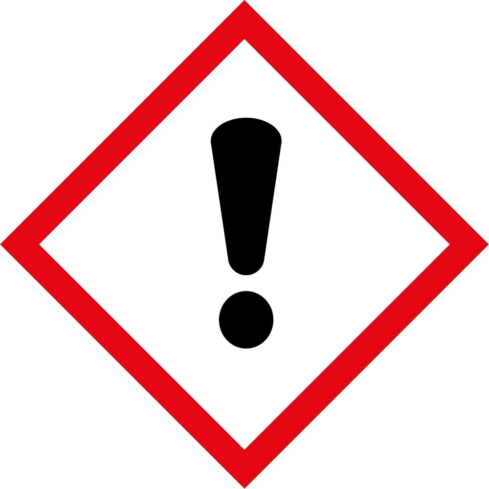 |
Can cause skin, eye, or respiratory irritation | Avoid skin contact |
| Hazardous To The Environment | Very toxic to aquatic life with long lasting effects | Don't release into water |
| Hazard | Risk | Additional Info |
|---|---|---|
| Laser (non-ionising) | Significant risk of eye or skin damage | 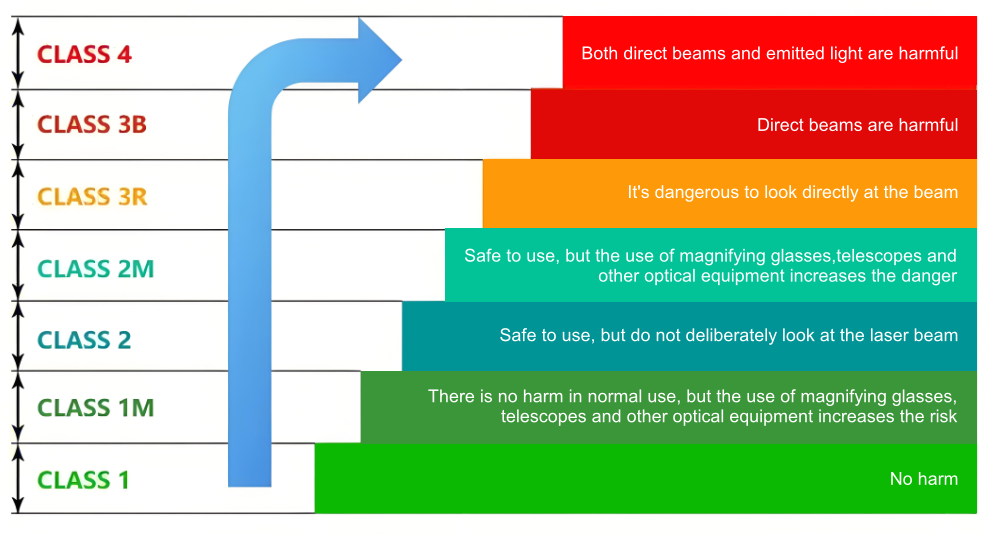 |
| Radiation (ionising) | Cancer | Used widely in medicine, archaeology investigation, fire protection, pharmaceutical industry. Three rules, justification, optimisation (ALARP), dose limitation. Keep in lead lined boxes, use tongs. Irradiation is inside out, contamination is outside in (or touching it). |
| Electricity | Greater voltage = greater risk of serious injury or death | Check leads, plug, and socket before use |
Health and safety is the responsibility of the employer. Employees must cooperate with their employer on H&S matters. The employer must conduct risk assessments. The employee must be informed and follow the risk assessment. For your practical endorsement, you are required to write a risk assessment.
Micrometers are used to find the diameter of objects.
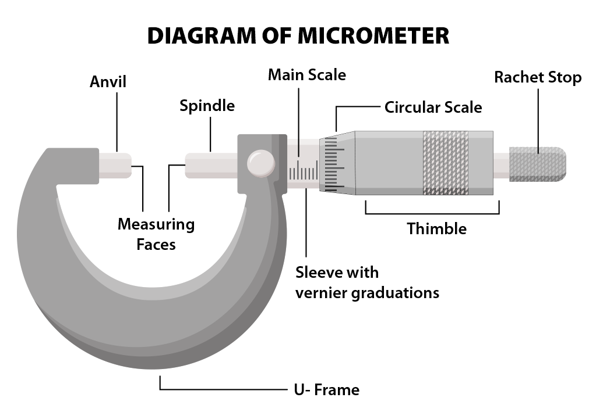
| Name | Reading 1 | Reading 2 | Reading 3 | Mean |
|---|---|---|---|---|
| Copper Wire | 1.24mm | 1.30mm | 1.25mm | 1.26mm |
| Spaghetti | 2.35mm | 1.85mm | 2.34mm | 2.35mm |
| Rice | 2.05mm | 2.38mm | 2.26mm | 2.23mm |
Ruler readings:
| Name | Reading 1 | Reading 2 | Reading 3 | Mean |
|---|---|---|---|---|
| Copper Wire | 1mm | 1mm | 1mm | 1mm |
| Spaghetti | 2mm | 2mm | 2mm | 2mm |
| Rice | 2mm | 2mm | 2mm | 2mm |
Conclusion: Micrometers offer a higher resolution.
Calipers can be used for a similar purpose.
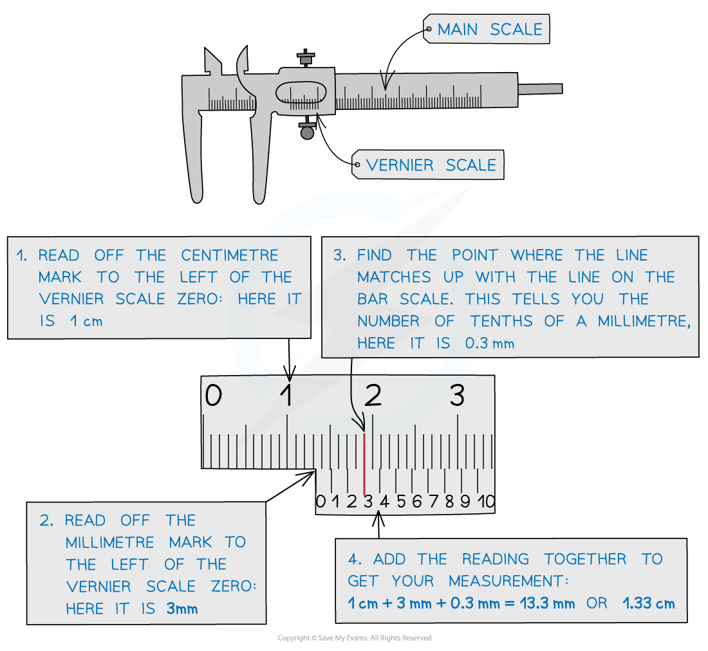
| Name | Reading 1 | Reading 2 | Reading 3 | Mean |
|---|---|---|---|---|
| Copper Wire | 0.10cm | 0.10cm | 0.11cm | 0.10cm |
| Spaghetti | 0.17cm | 0.18cm | 0.19cm | 0.18cm |
| Rice | 0.15cm | 0.14cm | 0.16cm | 0.15cm |
Sig figs are a measure of accuracy, by the number of digits in a number that aren't 0 (INBETWEEN THE LAST PAST THE LAST NUMBER, 1000.01 IS 6 SIG FIGS)
A: 2
B: 2
C: 1
D: 8
E: 1
F: 2
Only round at the last step of the process, unless told to estimate or approximate (Physics Topic 2.1.2 - Estimating Physical Quantities)!
Precision is where there is a small range of results.
Accurate means being close to the true value. See Physics Topic 2.1.4 - Precision And Accuracy
Precision can be mathematically quantified by the standard deviation. A lower standard deviation means data points are clustered closer to the mean, while a higher standard deviation means a greater spread.
Repeatability is the precision obtained when measurement results are produced by the same person with the same equipment. See Physics Topic 2.1.4 - Precision And Accuracy.
Reproducibility is the precision obtained when measurement results are produced by different people or different equipment. See Physics Topic 2.1.4 - Precision And Accuracy.
Validity can apply to an individual measurement or a whole investigation.
A measurement is valid if it measures what it is supposed to be measuring. A procedure is valid if it is suitable to answer the question being asked.
Confidence is a qualitative judgement expressing the extent to which a conclusion is justified by the quality of the evidence.
Qualitative = Not numerical judgement (ie confidence level is high/low because...)
Error is the difference between an individual measurement and the true value. See Physics Topic 2.1.3 - Systematic Errors And Random Errors
An anomaly is a value in a set of results that is judged not to be part of the inherent variation. See Physics Topic 2.1.3 - Systematic Errors And Random Errors for random errors, which are often the cause of anomalies.
Resolution is the smallest change in the quantity being measured that can be detected by an instrument. See Physics Topic 2.1.5 - Absolute And Percentage Uncertainties for the effects of this.
See Physics Topic 2.1.5 - Absolute And Percentage Uncertainties again. Stopwatches have a greater uncertainty than originally assumed due to human reaction time, so +-0.2s
For uncertainty on a graph, see Physics Topic 2.1.6 - Graphical Treatment Of Errors and Uncertainties. The voltage and current readings below are covered in Physics Topic 4.2.1 - Potential Difference And E.M.F and Physics Topic 4.1.2 - Electric Current And Charge. Resistance and Ohm's law, which relate voltage and current, are in Physics Topic 4.2.2 - Resistance And Ohm's Law.
Worked Uncertainty:
0.5cm, 0.005V, 0.05V, 0.2s
| Voltage | (V) | MeanV | Current | (A) | MeanI | ||
|---|---|---|---|---|---|---|---|
| V1 | V2 | V3 | I1 | I2 | I3 | ||
| 3.39 | 3.42 | 3.30 | 3.405 | 0.88 | 0.89 | 0.90 | 0.890 |
| 2.45 | 2.47 | 2.30 | 2.460 | 0.75 | 0.76 | 0.76 | 0.756 (rec) |
| 1.52 | 1.54 | 1.40 | 1.530 | 0.60 | 0.60 | 0.61 | 0.603 (rec) |
| 0.66 | 0.08 | 0.60 | 0.630 | 0.42 | 0.42 | 0.42 | 0.420 |
| -0.65 | -0.67 | -0.59 | -0.660 | -0.42 | -0.43 | -0.04 | -0.425 |
| -1.53 | -1.55 | -1.44 | -1.540 | -0.60 | -0.61 | -0.61 | -0.606 (rec) |
| Length (m) | Voltage | (V) | MeanV | |
|---|---|---|---|---|
| V1 | V2 | V3 | ||
| 0.1 | 0.13 | 0.10 | 0.11 | 0.113 (rec) |
| 0.2 | 0.23 | 0.22 | 0.10 | 0.225 |
| 0.3 | 0.32 | 0.29 | 0.27 | 0.280 |
| 0.4 | 0.40 | 0.40 | 0.11 | 0.400 |
| 0.5 | 0.55 | 0.56 | 0.51 | 0.555 |
| 0.6 | 0.66 | 0.60 | 0.60 | 0.600 |
| 0.7 | 0.71 | 0.72 | 0.71 | 0.713 (rec) |
Readings like these tie into resistance in Physics Topic 4.2.2 - Resistance And Ohm's Law, resistivity in Physics Topic 4.2.4 - Resistivity and the circuit rig in Physics Topic 4.2.3 - Resistance Of Circuit Components.